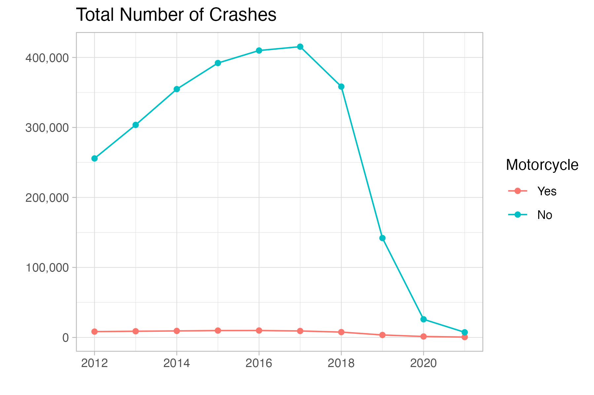
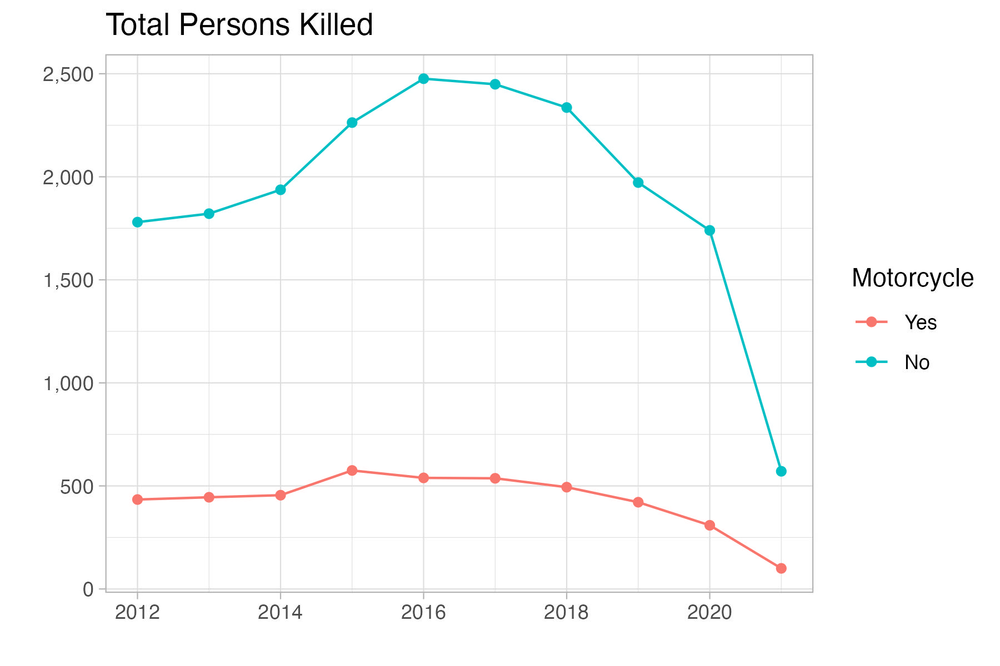

Results
Total Number of Crashes in Florida

Total Frequency of Crashes Per 100,000 Residents

Total Persons Killed

Top 100 Florida Cities for Motorcycle Crashes in 2019
Top 100 Florida Cities for Motorcycle Crashes Per 100k Residents
Motorcycle Accident Rate by Location